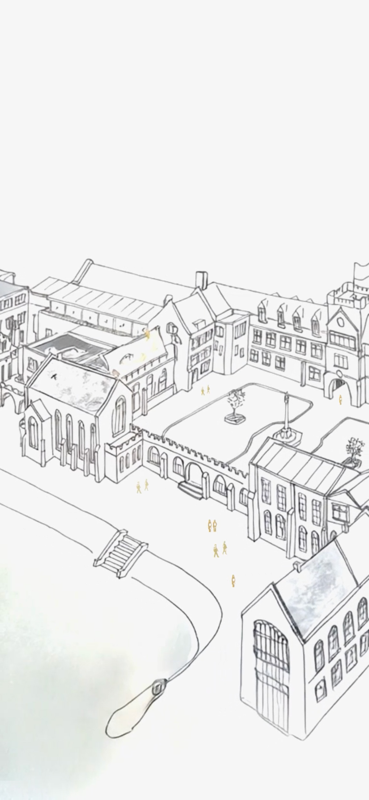
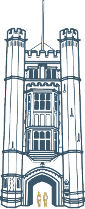

A transformative experience for every child
The Great Hall
Where every open day begins. Come and see Bancroft's for yourself.
Visit us

Where London ends,
something greater begins.
Explore the school
Woodford Green Est • 1737